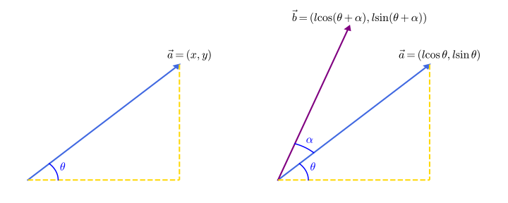

Vector
在本文之前，特别说明一下翻译的相关问题．由于历史原因，数学学科和物理学科关于「vector」一词的翻译不同．
在物理学科，一般翻译成「矢量」，并且与「标量」一词相对．在数学学科，一般翻译成「向量」．这种翻译的差别还有「本征」与「特征」、「幺正」与「酉」，等等．
在 OI Wiki，主要面向计算机等工程类相关学科，与数学学科关系更近一些，因此采用「向量」这个词汇．
定义及相关概念
向量：既有大小又有方向的量称为向量．数学上研究的向量为 自由向量，即只要不改变它的大小和方向，起点和终点可以任意平行移动的向量．记作 $\vec a$ 或 $\boldsymbol{a}$．
有向线段：带有方向的线段称为有向线段．有向线段有三要素：起点，方向，长度，知道了三要素，终点就唯一确定．一般使用有向线段表示向量．
向量的模：有向线段 $\overrightarrow{AB}$ 的长度称为向量的模，即为这个向量的大小．记为：$|\overrightarrow{AB}|$ 或 $|\boldsymbol{a}|$．
零向量：模为 $0$ 的向量．零向量的方向任意．记为：$\vec 0$ 或 $\boldsymbol{0}$．
单位向量：模为 $1$ 的向量称为该方向上的单位向量．一般记为 $\vec e$ 或 $\boldsymbol{e}$．
平行向量：方向相同或相反的两个 非零 向量．记作：$\boldsymbol a\parallel \boldsymbol b$．对于多个互相平行的向量，可以任作一条直线与这些向量平行，那么任一组平行向量都可以平移到同一直线上，所以平行向量又叫 共线向量．
相等向量：模相等且方向相同的向量．
相反向量：模相等且方向相反的向量．
向量的夹角：已知两个非零向量 $\boldsymbol a,\boldsymbol b$，作 $\overrightarrow{OA}=\boldsymbol a,\overrightarrow{OB}=\boldsymbol b$，那么 $\theta=\angle AOB$ 就是向量 $\boldsymbol a$ 与向量 $\boldsymbol b$ 的夹角．记作：$\langle \boldsymbol a,\boldsymbol b\rangle$．显然当 $\theta=0$ 时两向量同向，$\theta=\pi$ 时两向量反向，$\theta=\frac{\pi}{2}$ 时两向量垂直，记作 $\boldsymbol a\perp \boldsymbol b$，并且规定 $\theta \in [0,\pi]$．
注意到平面向量具有方向性，两个向量不能比较大小（但可以比较两向量的模长）．但是两个向量可以相等．
向量的线性运算
向量的加减法
在定义了一种量之后，就希望让它具有运算．向量的运算可以类比数的运算，从物理学的角度出发也可以研究向量的运算．
类比物理学中的位移概念，假如一个人从 $A$ 经 $B$ 走到 $C$，那么他经过的位移为 $\overrightarrow{AB}+\overrightarrow{BC}$，这其实等价于这个人直接从 $A$ 走到 $C$，即 $\overrightarrow{AB}+\overrightarrow{BC}=\overrightarrow{AC}$．
注意到力的合成法则——平行四边形法则，同样也可以看做一些向量相加．
整理一下向量的加法法则：
- 向量加法的三角形法则：若要求和的向量首尾顺次相连，那么这些向量的和为第一个向量的起点指向最后一个向量的终点；
- 向量加法的平行四边形法则：若要求和的两个向量 共起点，那么它们的和向量为以这两个向量为邻边的平行四边形的对角线，起点为两个向量共有的起点，方向沿平行四边形对角线方向．
这样，向量的加法就具有了几何意义．并且可以验证，向量的加法满足 交换律与结合律．
因为实数的减法可以写成加上相反数的形式，考虑在向量做减法时也这么写．即：$\boldsymbol a-\boldsymbol b=\boldsymbol a+(-\boldsymbol b)$．
这样，考虑共起点的向量，按照平行四边形法则做出它们的差，经过平移后可以发现 「共起点向量的差向量」是由「减向量」指向「被减向量」的有向线段．这也是向量减法的几何意义．
有时候有两点 $A,B$，想知道 $\overrightarrow{AB}$，可以利用减法运算 $\overrightarrow{AB}=\overrightarrow{OB}-\overrightarrow{OA}$ 获得．
向量的数乘
规定「实数 $\lambda$ 与向量 $\boldsymbol a$ 的积」为一个向量，这种运算就是向量的 数乘运算，记作 $\lambda \boldsymbol a$，它的长度与方向规定如下：
- $|\lambda \boldsymbol a|=|\lambda||\boldsymbol a|$；
- 当 $\lambda >0$ 时，$\lambda\boldsymbol a$ 与 $\boldsymbol a$ 同向，当 $\lambda =0$ 时，$\lambda \boldsymbol a=\boldsymbol 0$，当 $\lambda<0$ 时，$\lambda \boldsymbol a$ 与 $\boldsymbol a$ 方向相反．
根据数乘的定义，可以验证有如下运算律：
$$ \begin{aligned} \lambda(\mu \boldsymbol a)&=(\lambda \mu)\boldsymbol a\ (\lambda+\mu)\boldsymbol a&=\lambda \boldsymbol a+\mu \boldsymbol a\ \lambda(\boldsymbol a+\boldsymbol b)&=\lambda \boldsymbol a+\lambda \boldsymbol b \end{aligned} $$
特别地：
$$ \begin{gathered} (-\lambda)\boldsymbol a=-(\lambda \boldsymbol a)=-\lambda(\boldsymbol a)\ \lambda(\boldsymbol a-\boldsymbol b)=\lambda \boldsymbol a-\lambda \boldsymbol b \end{gathered} $$
判定两向量共线
两个 非零 向量 $\boldsymbol a$ 与 $\boldsymbol b$ 共线 $\iff$ 有唯一实数 $\lambda$，使得 $\boldsymbol b=\lambda \boldsymbol a$．
证明：由数乘的定义可知，对于 非零 向量 $\boldsymbol a$，如果存在实数 $\lambda$，使得 $\boldsymbol b=\lambda \boldsymbol a$，那么 $\boldsymbol a \parallel \boldsymbol b$．
反过来，如果 $\boldsymbol a\parallel \boldsymbol b$，$\boldsymbol a \not = \boldsymbol 0$，且 $|\boldsymbol b|=\mu |\boldsymbol a|$，那么当 $\boldsymbol a$ 与 $\boldsymbol b$ 同向时，$\boldsymbol b=\mu \boldsymbol a$，反向时 $\boldsymbol b=-\mu \boldsymbol a$．
最后，向量的加，减，数乘统称为向量的线性运算．
平面向量的基本定理及坐标表示
平面向量基本定理
定理内容：如果两个向量 $\boldsymbol{e_1},\boldsymbol{e_2}$ 不共线，那么存在唯一实数对 $(x,y)$，使得与 $\boldsymbol{e_1},\boldsymbol{e_2}$ 共面的任意向量 $\boldsymbol p$ 满足 $\mathbf p=x\boldsymbol{e_1}+y\boldsymbol{e_2}$．
平面向量那么多，怎样用尽可能少的量表示出所有平面向量？
只用一个向量表示出所有向量显然是不可能的，最多只能表示出某条直线上的向量．
再加入一个向量，用两个 不共线 向量表示（两个共线向量在此可以看成同一个向量），这样可以把任意一个平面向量分解到这两个向量的方向上了．
在同一平面内的两个不共线的向量称为 基底．如果基底相互垂直，那么在分解的时候就是对向量 正交分解．
平面向量的坐标表示
如果取与横轴与纵轴方向相同的单位向量 $i,j$ 作为一组基底，根据平面向量基本定理，平面上的所有向量与有序实数对 $(x,y)$ 一一对应．
而有序实数对 $(x,y)$ 与平面直角坐标系上的点一一对应，于是作 $\overrightarrow{OP}=\boldsymbol p$，那么终点 $P(x,y)$ 也是唯一确定的．由于研究的对象是自由向量，可以自由平移起点，这样，在平面直角坐标系里，每一个向量都可以用有序实数对唯一表示．
平面向量的坐标运算
平面向量线性运算
由平面向量的线性运算可以推导其坐标运算，主要方法是将坐标全部化为用基底表示，然后利用运算律进行合并，之后表示出运算结果的坐标形式．
若两向量 $\boldsymbol a=(m,n)$，$\boldsymbol b=(p,q)$，则：
$$ \begin{aligned} \boldsymbol a+\boldsymbol b&=(m+p,n+q)\ \boldsymbol a-\boldsymbol b&=(m-p,n-q)\ k\boldsymbol a&=(km,kn) \end{aligned} $$
求一个向量的坐标表示
已知两点 $A(a,b),B(c,d)$，易证 $\overrightarrow{AB}=(c-a,d-b)$．
平移一点
有时需要将一个点 $P$ 沿一定方向平移某单位长度，这样把要平移的方向和距离组合成一个向量，利用向量加法的三角形法则，将 $\overrightarrow{OP}$ 加上这个向量，得到的向量终点即为平移后的点．
三点共线的判定
若 $A,B,C$ 三点共线，则 $\overrightarrow{OB}=\lambda \overrightarrow{OA}+(1-\lambda)\overrightarrow{OC}$．
三点共线判定的拓展
在三角形 $ABC$ 中，若 $D$ 为 $BC$ 的 $n$ 等分点（$n\ BD=k\ DC$），则有：$\overrightarrow{AD}=\frac{n}{k+n}\overrightarrow{AB}+\frac{k}{k+n}\overrightarrow{AC}$
在三维空间中的拓展（立体几何/空间向量）
在空间中，以上部分所述的所有内容均成立．更有：
空间向量基本定理
定理内容：如果三个向量 $\boldsymbol{e_1},\boldsymbol{e_2},\boldsymbol{e_3}$ 不共面，那么存在唯一实数对 $(x,y,z)$，使得空间中任意向量 $\boldsymbol p$ 满足 $\mathbf p=x\boldsymbol{e_1}+y\boldsymbol{e_2}+z\boldsymbol{e_3}$． 根据空间向量基本定理，我们同样可以使用三个相互垂直的基底 $\boldsymbol{e_1},\boldsymbol{e_2},\boldsymbol{e_3}$ 作为正交基底，建立 空间直角坐标系 并用一个三元组 $(x,y,z)$ 作为坐标表示空间向量．
共面向量基本定理
如果存在两个不共线的向量 $\boldsymbol{x},\boldsymbol{y}$, 则向量 $\boldsymbol{p}$ 与 $\boldsymbol{x},\boldsymbol{y}$ 共面的充要条件是存在唯一实数对 $(a,b)$ 使得 $\boldsymbol{p}=a\boldsymbol{x}+b\boldsymbol{y}$．
方向向量
空间直线的方向用一个与该直线平行的非零向量来表示，该向量称为这条直线的一个方向向量．直线在空间中的位置，由它经过的空间一点及它的一个方向向量 完全确定．
注意，平面中的直线也有方向向量．
对于 空间 中的直线，对其方向向量有以下求法：
-
若有 $A(x_1,y_1,z_1),B(x_2,y_2,z_2)$，则 $AB$ 所在直线的一个方向向量为 $\boldsymbol{s}=(x_2-x_1,y_2-y_1,z_2-z_1)$．
-
若已知一个与所求直线 垂直 的平面，该平面一般方程为 $ax+by+cz+d=0$，那么垂直于该平面的直线的一个方向向量为 $\boldsymbol{s}=(a,b,c)$，该方向向量也是该平面的 一个法向量．
法向量
对于一个面 $ABCD$，其法向量 $\boldsymbol{n}$ 与这个面垂直．
计算方法：任取两个面内直线 $\overrightarrow{AB},\overrightarrow{AD}$，使得 $\overrightarrow{AB} \cdot \boldsymbol{n}=\boldsymbol{0}$ 且 $\overrightarrow{AD} \cdot \boldsymbol{n}=\boldsymbol{0}$，利用坐标法即可计算．
向量与矩阵
线性代数中，线性变换可以用矩阵表示．令 $T$ 表示一个将 $\mathbf R^n$ 映射到 $\mathbf R^m$ 的线性变换，$\mathbf x$ 表示一个 $n$ 维列向量，则存在一个 $m\times n$ 矩阵 $A$，使得
$$ T(\mathbf x)=A\mathbf x. $$
矩阵 $A$ 称为线性变换 $T$ 的变换矩阵．在算法问题中，一般情况下线性变换在相同维度下进行，因此 $A$ 是一个方阵．这样，对向量的线性变换问题可以转化为矩阵乘法问题．
接下来我们探讨三种竞赛中较为常见的变换与其对应的变换矩阵：放缩变换（变换矩阵用 $S$ 表示）、旋转变换（变换矩阵用 $R$ 表示）和平移变换（变换矩阵用 $T$ 表示）．
放缩变换
对于 $n$ 维列向量 $\boldsymbol a$，将其每一维放缩 $v_1,v_2,\ldots,v_n$ 倍．很容易发现放缩操作的变换矩阵 $R$ 是 $n\times n$ 的对角矩阵，即 $S=\operatorname{diag}{v_1,v_2,\ldots,v_n}$．
旋转变换
向量的旋转是相对复杂的操作，我们仅限于讨论二维和三维的情况．
向量绕点旋转
对于向量绕点旋转，一般指的是向量绕原点旋转．对于某一点绕另一点 $P$ 旋转，可以利用平移变换使得点 $P$ 位于原点，进行向量旋转后再将坐标系平移回原位置即可．设平移操作的变换矩阵为 $T$，绕原点旋转操作的变换矩阵为 $R$，则整个过程的变换矩阵为 $TRT^{-1}$．根据几何意义，$T^{-1}$ 一定存在．
对于二维空间，设 $\boldsymbol a=(x,y)$，倾角为 $\theta$，长度为 $l=\sqrt{x^2+y^2}$．则 $x=l\cos \theta,y=l\sin\theta$．令其绕原点逆时针旋转 $\alpha$ 角，得到向量 $\boldsymbol b=(l\cos(\theta+\alpha),l\sin(\theta+\alpha))$．

由三角恒等变换得，
$$ \boldsymbol{b}=(l(\cos\theta\cos\alpha-\sin\theta\sin\alpha),l(\sin\theta\cos\alpha+\cos\theta\sin\alpha)) $$
化简，
$$ \boldsymbol b=(l\cos\theta\cos\alpha-l\sin\theta\sin\alpha,l\sin\theta\cos\alpha+l\cos\theta\sin\alpha) $$
把上面的 $x,y$ 代回来得
$$ \boldsymbol b=(x\cos\alpha-y\sin\alpha,y\cos\alpha+x\sin\alpha) $$
因此二维空间下，变换矩阵 $R$ 为
$$ R= \begin{bmatrix} \cos\alpha & -\sin\alpha\ \sin\alpha & \cos\alpha \end{bmatrix}. $$
对于三维空间，向量旋转需要使用两个角度参量，即天顶角旋转角度与方向角旋转角度，可以利用 空间球坐标系 进行旋转操作．
向量绕直线旋转
对于三维向量，更常见的的是绕某直线旋转．同样为了方便，此直线是过原点的．如果直线不过原点，我们仍可以平移坐标系进行转化．
取直线的方向向量 $\boldsymbol u=(u_x,u_y,u_z)$，设三维向量绕其逆时针旋转 $\theta$ 角．则对应的变换矩阵 $R$ 为[^note1]
$$ R= \begin{bmatrix} u_x^2 \left(1-\cos \theta\right) + \cos \theta & u_x u_y \left(1-\cos \theta\right) - u_z \sin \theta & u_x u_z \left(1-\cos \theta\right) + u_y \sin \theta \ u_x u_y \left(1-\cos \theta\right) + u_z \sin \theta & u_y^2\left(1-\cos \theta\right) + \cos \theta & u_y u_z \left(1-\cos \theta\right) - u_x \sin \theta \ u_x u_z \left(1-\cos \theta\right) - u_y \sin \theta & u_y u_z \left(1-\cos \theta\right) + u_x \sin \theta & u_z^2\left(1-\cos \theta\right) + \cos \theta \end{bmatrix}. $$
平移变换
平移变换并非线性变换，而是仿射变换．但 $\mathbf R^n$ 下的仿射变换仍可以用 $\mathbf R^{n+1}$ 下的线性变换表示．
考虑 $n$ 维向量 $\boldsymbol a=(a_1,a_2, \ldots , a_n)$，现在要将其沿向量 $\boldsymbol t=(t_1, t_2, \ldots , t_n)$ 平移．我们对列向量 $\boldsymbol a$ 添加一维并置为 $1$，得到新列向量 $\boldsymbol a'=(a_1, a_2, \ldots , a_n, 1)$．则变换矩阵 $T$ 可以写作
$$ T= \begin{bmatrix} 1 & & & & t_1 \ & 1 & & & t_2 \ & & \ddots & & \vdots \ & & & 1 & t_n \ & & & & 1 \ \end{bmatrix}. $$
对于其他线性变换矩阵，在矩阵中增加一列与一行，除右下角的元素为 $1$ 外其它部分填充为 $0$，通过这种方法，所有的线性变换矩阵都可以转换为仿射变换矩阵．例如，对于二维向量旋转，变换矩阵可以变为
$$ R'= \begin{bmatrix} \cos\alpha & -\sin\alpha & 0\ \sin\alpha & \cos\alpha & 0\ 0 & 0 & 1 \end{bmatrix}. $$
向量的更严格定义
上文中，向量被定义为了空间中的有向线段．但是严格来说，向量不仅是有向线段．要作出向量的更严格定义，需要先定义 线性空间，具体内容参见 线性空间 页面的介绍．
[^note1]: 参见 Rotation matrix from axis and angle - Wikipedia